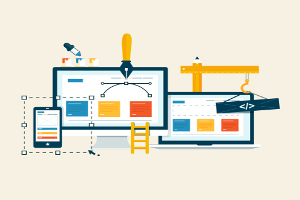
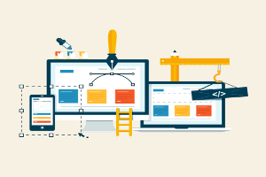

At Simontech, we pride ourselves on getting the fundamentals working first. We work with all our customers to make sure we know what they want from a website, so we can ensure that we deliver 100% of the time.
At Simontech, we don't just make ordinary websites. We communicate with our clients to make a website that fits with their brand and house style, while using our experience of web design to make exceptional looking websites.
At Simontech, we recognise how important it is to make a website accessible to as many as possible. We pride ourselves on our committment to making websites accessible for as many people as possible, across as many devices as possible.